Learning Goals
At the end of this Tutorial, you will be able to:
- Add a link to the TailwindCSS CDN with a <script> tag in the <head> of the web page.
- Understand the importance of adding negative space between elements in web design.
- Use the CSS padding property to apply internal spacing inside HTML container/semantic tags such as <header> and <section>.
- Use the CSS margin property to apply spacing around HTML block-level text tags such as <h1>, <h2> and <h3>.
- Apply different padding and margin values for different viewport widths based on the 768px breakpoint.
About TailwindCSS
TailwindCSS is a Cascading Style Sheets (CSS) framework provides simplified syntax for styling HTML elements and creating responsive layouts.
You can use TailwindCSS in either of two ways:
- Hosted (CDN): Add the relevant <script> tag to the <head> of your page. Good for simple, single-page projects.
- Build pipeline (Node/PostCSS): A better choice for multiple pages and complex projects.
In this Tutorial, we will use the hosted (CDN) approach.
Adding a link to the TailwindCSS CDN
Follow the steps below.
- Open your index.html web page and your three sample exercises pages: page-1.html, page-2.html, and page-3.html.
- In the <head> of each HTML file, add the following lines:
<script src="https://cdn.jsdelivr.net/npm/@tailwindcss/browser@4"></script> <style type="text/tailwindcss"> </style>
Save your web pages and view them in a web browser. You should now see the default styles of the TailwindCSS applied.
You can add your own custom CSS style rules within the <style> tags.
Next, we will explore the concept of negative space in web design.
Layout and ‘negative space’
The term layout describes the placement of content elements - such as text and images - on a printed page or electronic screen. An important part of layout is the spacing between different elements.
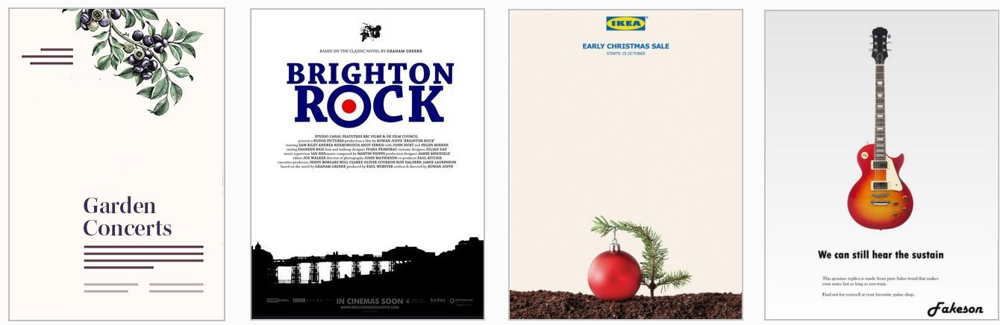
The term white space comes from the world of print design where content – text and images – are printed (mostly) on white-coloured paper. White space means space in a design layout that is empty. Although it contains nothing, white space is just as important as any of the content it surrounds for this reason: it makes the content more inviting to read.
Because electronic screens – and modern printing processes – can create almost any background colour, the original term of white space is increasingly known by the alternative term of negative space.
Here are some examples of negative space in use in web design.
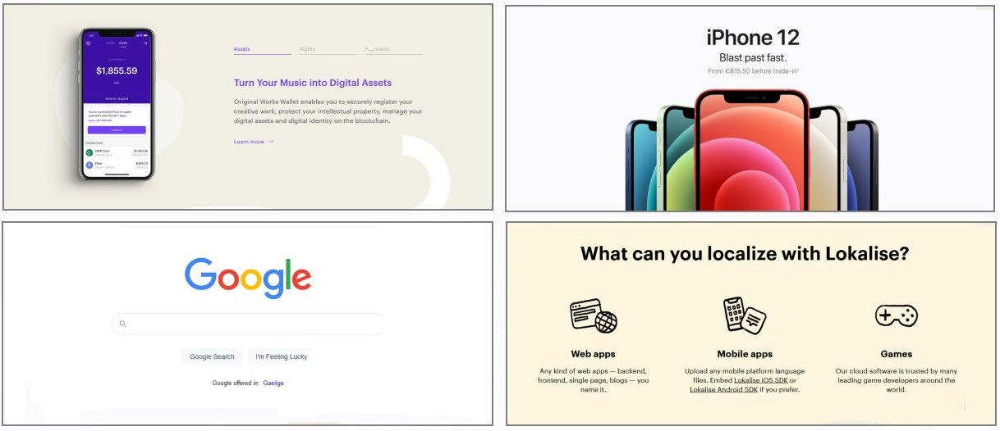
Below are links to a number of helpful resources about negative space in web design.
Whitespace in Web Design: What It Is and Why You Should Use It
From Gisele Muller on Treehouse.
A Guide to Effective Use of White Space in Web Design
From Joanne Amos on Flywheel.
White Space Design: 20 Striking Examples and Best Practices
From Joseph Downes on Just in Mind.
What Is Whitespace? 9 Websites to Inspire Your Web Design
From Karla Cook on HubSpot Marketing Blog.
White-Space at Work: Why Less is More in Your Website Design
From Sherice Jacob on Crazyegg Blog.
White Space - A Perfect Option For Improving Usability In Web Designs
From Isabella Morris on Usability Geek.
In web design, the two important CSS properties that control spacing are padding and margin. Let's look at each property in turn. We will also see how we can use TailwindCSS for setting these properties in UI layouts.
Padding and layout
You typically use the padding property to set the internal spacing for container/semantic elements such as <nav>, <header>, <section>, and <footer>.
Consider the pages below from four websites, each of which contains a single column of text, as displayed on a laptop or desktop screen.
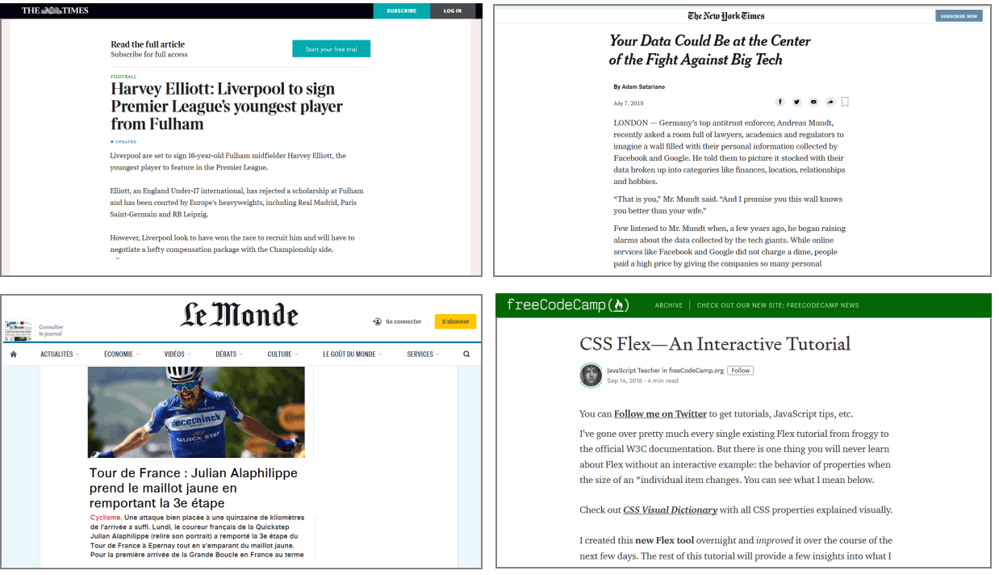
To achieve this effect in CSS, you could set padding left and right values (x-axis) to about 20% for the container.
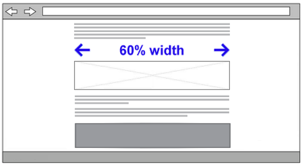
On laptop or desktop screens, the maximum line length for easy readability of text is around 65-75 characters. That is why you should add generous left and right negative space for this single-column layout.
For smaller, mobile screens, however, you typically want to set smaller left and right padding values, perhaps about 5% on each side.
About the viewport
The term viewport is used to describe that area of a web browser screen that displays a web page’s content. It excludes any menus, web address bars, bookmark bars, scroll bars or other similar elements.
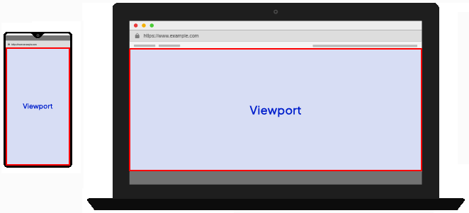
Here are typical viewport widths for different devices:
- Mobile phones: 390px - 480px
- Large phones/Small tablets: 480px - 768px
- Tablets (like iPads): 768px - 1024px
- Laptops/desktops: 1024px - 1920px
- Large screens: 1920px and above
About Responsive Web Design (RWD)
As a web designer, you have no control over the size of the screen on which your web pages will be displayed.
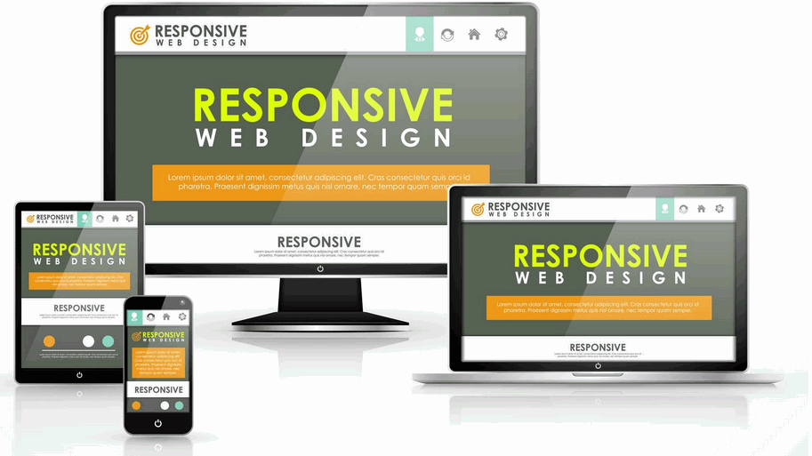
Creating web pages that respond or ‘scale‘ appropriately to the viewport size of a user’s device is called Responsive Web Design (RWD). Responsive web pages adjust the layout, placement, and size of their elements so that the page looks good no matter what screen it’s being viewed on.
About breakpoints
When designing for such a wide range of viewport sizes, web designers rely on what are called breakpoints. These are the viewport widths at which the page layout needs to change.
For example, a three-column layout may display nicely on larger screens – but on mobile devices it will be necessary to transform the layout into just a single column.
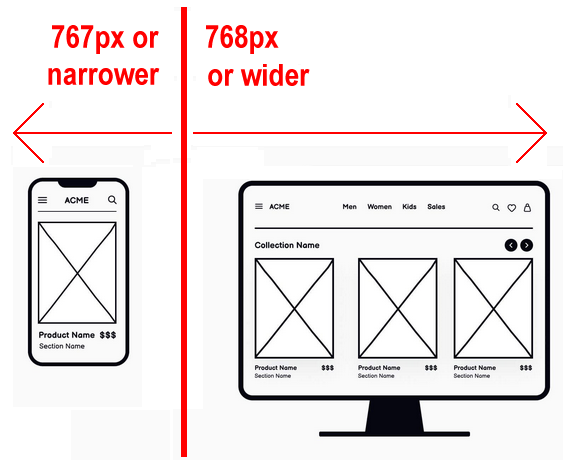
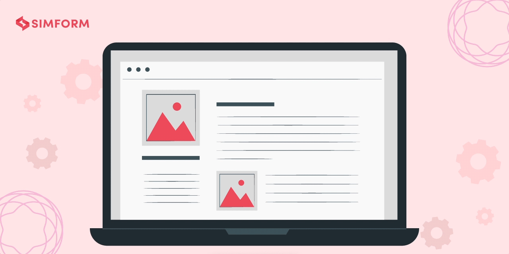
For the simple single-column web pages, we will begin with just one breakpoint: 768px. This is the viewport width of an Apple iPad in portrait ('standing up') orientation. So:
- Big viewports: These are viewports that are 768 pixels wide or wider.
- Small viewports: These are viewports that are 767 pixels wide or narrower.
Another feature of a web page that needs to change with viewport width is the layout of the <nav> container element.
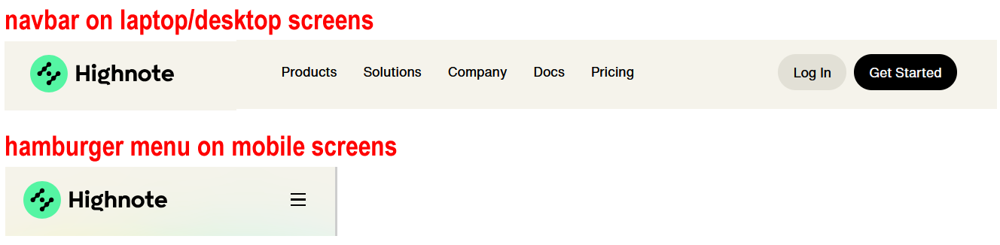
Consider again the four sample web pages shown previously. The responsive padding effect you want to achieve looks as follows.
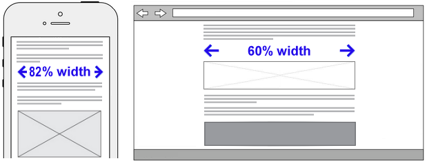
- On ‘small screens‘ (up to 767px width), you might want the web page content to fill 82% of the viewport width.
- On ‘big screens‘ (768px or wider), however, you might want the web page content to fill only 60% of the viewport width.
To apply this responsive design feature with TailwindCSS, paste the following CSS style rules inside the <style> tags of your index.html, page-1.html, page-2.html, and page-3.html web pages.
header {
@apply pt-8 px-[9%] pb-[42px] md:py-[3%] md:px-[20%];
}
section {
@apply pt-8 px-[9%] pb-[42px] md:py-[3%] md:px-[20%];
}@applylets you use Tailwind syntax inside a standard CSS style rule.
Save your changes and view your four web pages at different viewport widths.
| TailwindCSS | Meaning |
|---|---|
| pt-8 | Adds padding to the top of the element using Tailwind's spacing value 8. |
| px-[9%] | Adds 9% padding to the left and right sides of the element. |
| pb-[42px] | Adds 42px padding to the bottom of the element. |
| md:py-[3%] | On viewports 768px wide and above, adds 3% padding to the top and bottom. |
| md:px-[20%] | On viewports 768px wide and above, adds 20% padding to the left and right. |
You can read the TailwindCSS docs on padding at the URL below:
Margins and layout
The margin property in CSS is most commonly used to create vertical (y-axis) spacing between block-level content elements such as <h1>, <h2> <h3> and <p>.
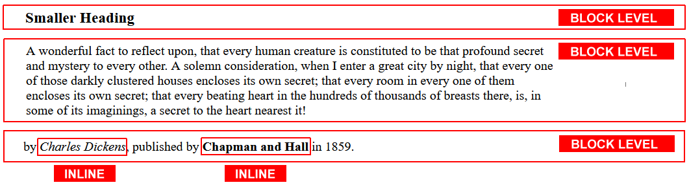
A web page without vertical (top and bottom) margins around text elements would be very difficult to read.
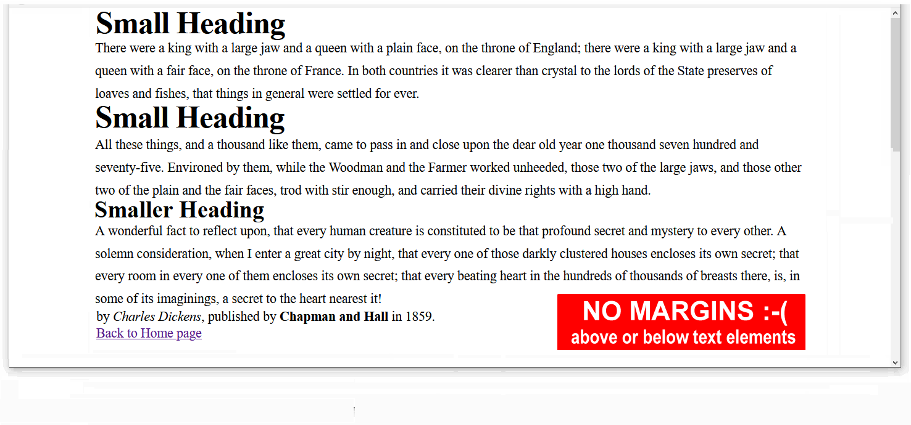
With TailwindCSS, you can set margins with the mt and mb properties.
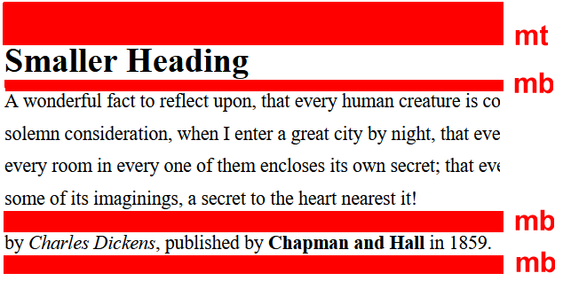
To apply vertical margins to the block-level elements in your web pages, paste the following CSS style rules inside the <style> tags.
section h2 {
@apply mt-8;
}
section h3 {
@apply mt-6;
}
section p {
@apply mb-4;
}Save your four web pages and verify that the vertical margins have been added.
You can read the TailwindCSS docs on margins at the URL below:
Padding and margins: summary
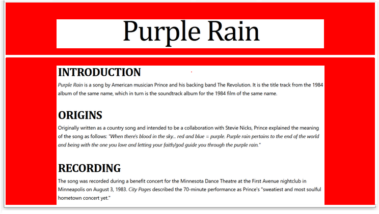 |
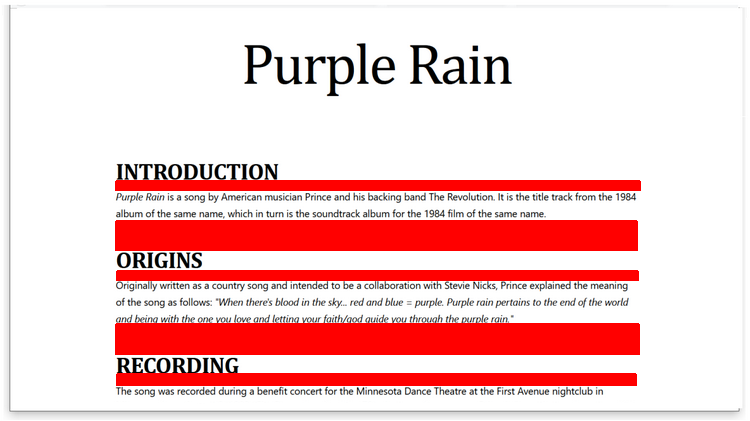 |
PADDING |
MARGINS |
Using DevTools in your web browser
DevTools (the short name for Developer Tools) are built into most web browser. This feature enables you to view and experiment with your content and code.
Your laptop, desktop, tablet and phone come with a default web browser pre-installed:
- Microsoft Edge: This web browser is included with the Microsoft Windows operating system.
- Safari: This web browser is included in the macOS and iOS operating systems used on Apple computers, tablets and mobile phones.
Neither Microsoft Edge or Apple Safari are recommended for frontend development tasks.
Here are the two web browsers most commonly used by frontend designers and developers:
- Google Chrome: The most popular in the world, partly because it is pre-installed on Android phones.
- Brave: A privacy-focused web browser developed by Brendan Eich, creator of the JavaScript programming language.
To open DevTools in your Chrome or Brave web browser:
- Windows: Press Ctrl and Shift and i
- Apple Mac: Press Command ⌘ and Option ⌥ and i.
Tip: Think letter i for inspect 👁
Devtools offer a number of tabs for different purposes. For working with HTML and CSS, click the Elements tab.
By default, the DevTools window will display at the left side of the web browser window. This is a good choice for working with JavaScript code.
For working with HTML content and CSS styles, however, a better option is to position or dock the DevTools window at the bottom of the web browser window.
Changing the DevTools position
To position or dock the DevTools window:
- Open the DevTools window.
- Near the top-right of the DevTools window, click the vertical ellipses (three dots) icon.
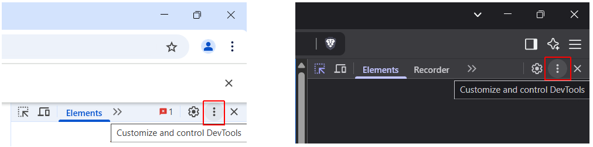
- Click the icon for your required docking position.
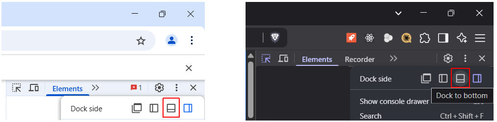
- By default, the Elements tab is displayed. If not, click on it.
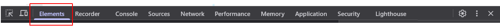
Now you can see the HTML code for the web page you are viewing. You can also see the CSS styles applied to each element in the page.
Closing the What's New pane
You may see a pane called What's New may display across the bottom of the DevTools window.
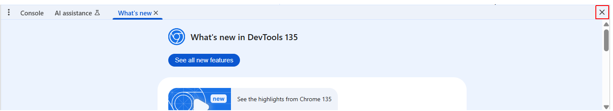
You can close this to free up space on your screen.
Changing the DevTools font size
To change the font size in the DevTools window:
- Click anywhere in the DevTools window.
- Press the Ctrl key and the plus + or dash - key.
To reset, press Ctrl and 0.
DevTools and responsive UI layouts
DevTools allow you to view a web page at different viewport widths.
To use DevTools to view a web page at different viewport widths, follow these steps:
- Open the DevTools window.
- Click the Toggle device toolbar button.
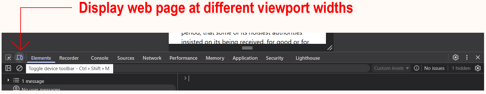
- Use the dropdown menu at the top of your brower window to select a device or enter a custom viewport width and height.
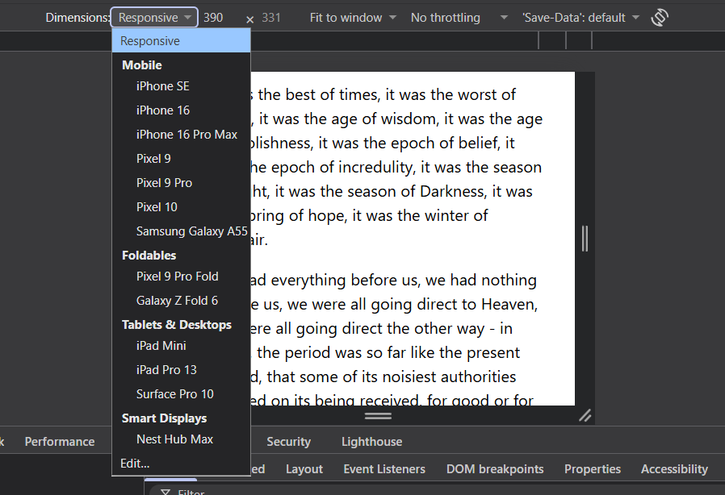
Uploading your work to GitHub
Your final task is to upload your work to your account on GitHub.
- Open a new tab in your web browser and go to github.com. If you are not already signed in to your GitHub account, sign in now.

- On the next GitHub screen displayed, near the right of the screen, you can see a button named Add file. Click on it.
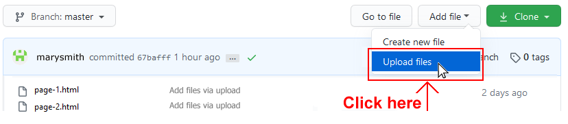
- From the dropdown list displayed, choose the option Upload files.

- In File Explorer (Windows) or Finder (Apple Mac), drag-and-drop your index.html file and your 📁 exercises sub-folder to upload them to your repository on GitHub.
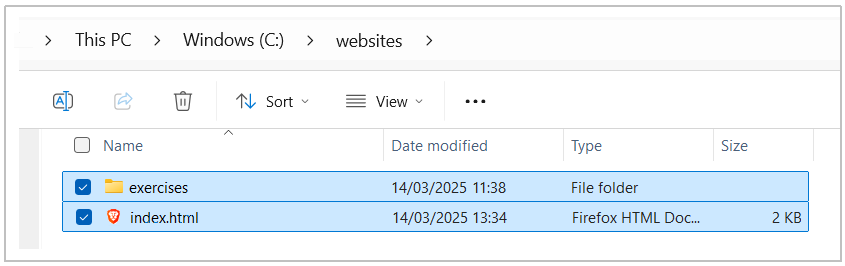
Note: Because your upload includes a folder and not just files, you must use the drag-and-drop method rather than the file select method. - Scroll down to the bottom of the GitHub screen, and accept or edit the short message (Add files via upload) in the Commit changes box.
- Finally, click the green Commit changes button to upload your entire exercises sub-folder and all the files it contains.
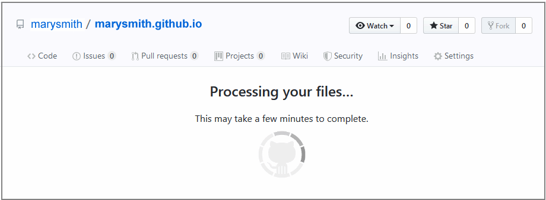
Your web pages are now published on GitHub at web addresses similar to the following, where username is the username you have chosen for your GitHub account:
https://username.github.io/index.html
Or simply:
https://username.github.io
And:
https://username.github.io/exercises/page-1.html
https://username.github.io/exercises/page-2.html
https://username.github.io/exercises/page-3.html
It may take a few minutes for your uploaded files to appear on GitHub.